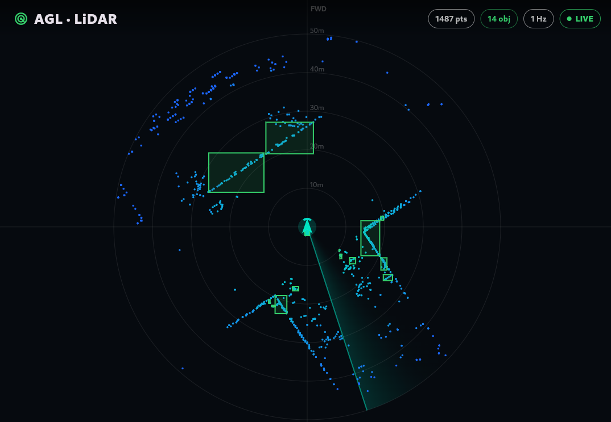

Week 13 turned the LiDAR cloud into boxes, but only in an offline renderer on the server. The dashboard still drew nothing but points. This week closes that gap: the detector's boxes now land on the actual AGL dashboard, drawn live over the cloud, running the whole way through into an emulated AGL screen.
TL;DR The AGL Flutter HMI now subscribes to a second ROS topic — the detector's vision_msgs/Detection3DArray on /carla/detections — and draws each 3D box over the point cloud in the top-down view, with a live object counter. I ran it end to end: the perception pipeline loops on the GPU-less server, its rosbridge is tunnelled to my laptop, and the AGL dashboard booted in QEMU reads the stream and renders the green boxes in real time. The dashboard now shows objects, not just points.
By the end of Week 13 every piece existed except the join. The detector produced boxes and published them on the standard vision_msgs/Detection3DArray topic; the dashboard drew a live point cloud. But the dashboard was not reading the boxes. You could see the perception output only in a separate, headless bird's-eye renderer on the server — never on the screen that is meant to be the product.
This week is that join, and nothing more glamorous: teach the HMI to subscribe to the detections and draw them. It is a small change in lines of code and a big one in what the demo means, because it is the first time the perception result appears where a driver would actually see it.

The HMI already spoke rosbridge for the point cloud. Adding the boxes meant a second subscription over the same WebSocket and a second thing to draw:
/carla/lidar, the app now subscribes to /carla/detections (vision_msgs/msg/Detection3DArray). Same connection, same JSON transport — rosbridge just hands over a second stream.bbox.center.position), the size (bbox.size), and the heading, recovering the yaw angle from the orientation quaternion. That becomes a simple footprint rectangle in the car's ground plane.The endpoint the app connects to is a build-time setting rather than a hard-coded address, which is what let the same app binary connect to a local rosbridge on the bench and to a tunnelled one in this run without editing a line.
The interesting part is that all of this ran across the same split setup the project has lived with: the heavy compute on the GPU-less server, the AGL screen emulated on the laptop, and rosbridge as the bridge between them. Four processes, three of them on the laptop:
# 1. ON THE SERVER: loop the recorded bag through the detector,
# with rosbridge serving /carla/lidar + /carla/detections on :9090
bash ~/carla-bridge/play_bag_detect.sh 5
# 2. ON THE LAPTOP: tunnel the server's rosbridge to localhost,
# so the QEMU guest reaches it at ws://10.0.2.2:9090
ssh -N -L 127.0.0.1:9090:localhost:9090 <server>
# 3. ON THE LAPTOP: boot the AGL image in QEMU
./run-qemu.sh
# 4. ON THE LAPTOP: build + push the HMI into the guest, pointed at the tunnel
flutter run -d agl-qemu --dart-define=ROSBRIDGE_URL=ws://10.0.2.2:9090The screenshot above is exactly that stack: the boxes in it were computed on the server from the recorded CARLA cloud, carried out as JSON over the tunnel, and drawn by the app inside the emulated AGL dashboard. The transport leg the project proved back in the early weeks — rosbridge into AGL — is the same one carrying the detections now. It just gained a second passenger.
There is a deliberate design choice hiding in the message type. The app does not know or care how the boxes were produced. It subscribes to vision_msgs/Detection3DArray — a ROS standard — and draws whatever detections arrive. Today those come from the classical PCL clustering node. Tomorrow they could come from a learned detector such as PointPillars. As long as the new detector publishes the same message on the same topic, the dashboard does not change at all.
Why this matters: it lets the two halves move independently. The guidance from both mentors was the same — ship the working clustering version first, then treat the learned model as a parallel enhancement rather than a prerequisite. Because the HMI is wired to the message and not to the algorithm, that upgrade is a drop-in later, with nothing to rewire on the dashboard side. Release the working thing now; make it smarter without disturbing it.
Two things are worth stating plainly, so the screenshot is not read as more than it is.
Status: the perception result is now visible on the dashboard. The AGL Flutter HMI subscribes to the detector's standard detection topic and renders the 3D boxes over the live point cloud, verified end to end into an emulated AGL screen over a tunnelled rosbridge. The loop the project set out to build — cloud → detections → dashboard — is closed for the first time.
Week 13 gave the pipeline objects. Week 14 put them on the glass.
vision_msgs/Detection3DArray the dashboard reads.